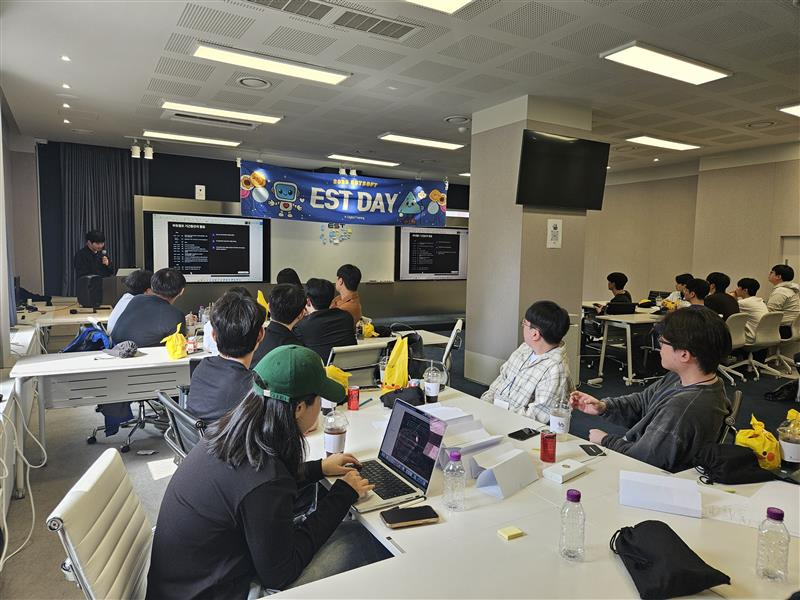
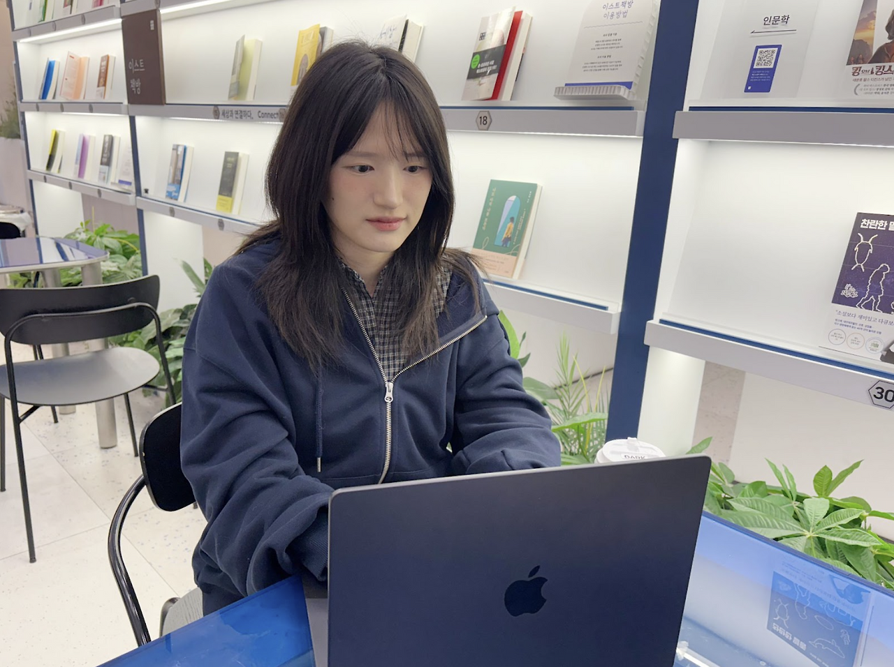
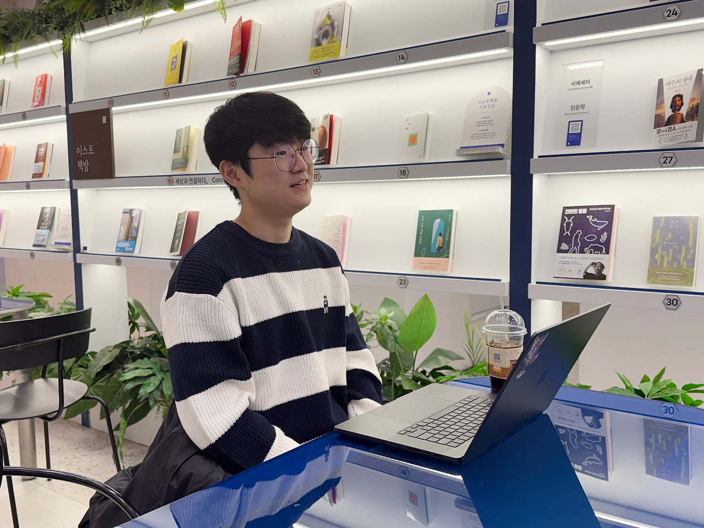

모집 중01
모집 중01

부트캠프만으로 진짜 취업할 수 있을까?
청년 고용률의 내리막.. 현실은 잔혹하지만, 돌파구는 있습니다.
자세히 보기ESTSOFT × NEXT CAREER
ESTCAMP / 202601 FIND YOUR COURSE
온·오프라인부터 100% 온라인까지, 나에게 맞는 배움의 방식을 찾아보세요.
전체 5개 과정
모집 일정·상태는 2026.10.22 원본 사이트 표기 기준이며, 자세한 내용은 각 과정 공고에서 확인해 주세요.
02 MORE WAYS TO LEARN
EST · AI CHALLENGERS
신청 마감방학 5주 완성 AI 부트캠프 · Road to AI

GWANGJU AI ACADEMY
2026 · 7기2026 인공지능사관학교 7기 교육생 모집
모집 안내 보러가기 ↗
커리어 이야기청년 고용률의 내리막.. 현실은 잔혹하지만, 돌파구는 있습니다.
자세히 보기부트캠프 시장의 후발주자 '이스트캠프'의 반란
자세히 보기 릴레이 인터뷰
릴레이 인터뷰이스트캠프 PM 김인서님의 릴레이 인터뷰
자세히 보기
릴레이 인터뷰이스트캠프 교육 운영 담당자 홍유라님의 릴레이 인터뷰
자세히 보기
릴레이 인터뷰이스트캠프 백엔드 개발 정동형 강사님의 릴레이 인터뷰
자세히 보기04 READY TO START?
과정에 관심이 생기셨나요? 아래 조건을 확인해 주세요.
4년제 — 2학년 2학기 종료 시부터
3년제 — 1학년 2학기 종료 시부터
2년제 — 1학년 입학 시부터 지원 가능
기획·개발·보안 직군으로 취업과 이직을 희망하는 분. 풀타임 전담 멘토진의 밀착 케어와 서브 프로그램, 실시간 온라인 교육으로 함께합니다.
실무 경력 10년 이상의 전·현직 기획자 및 개발자가 주강사로 참여해 실무 경험을 바탕으로 실용적인 교육을 제공합니다.
이스트소프트가 보유한 실제 서비스를 활용해 다양한 실무를 다루고, 포트폴리오를 제작할 수 있습니다.
LET’S FIND YOUR NEXT